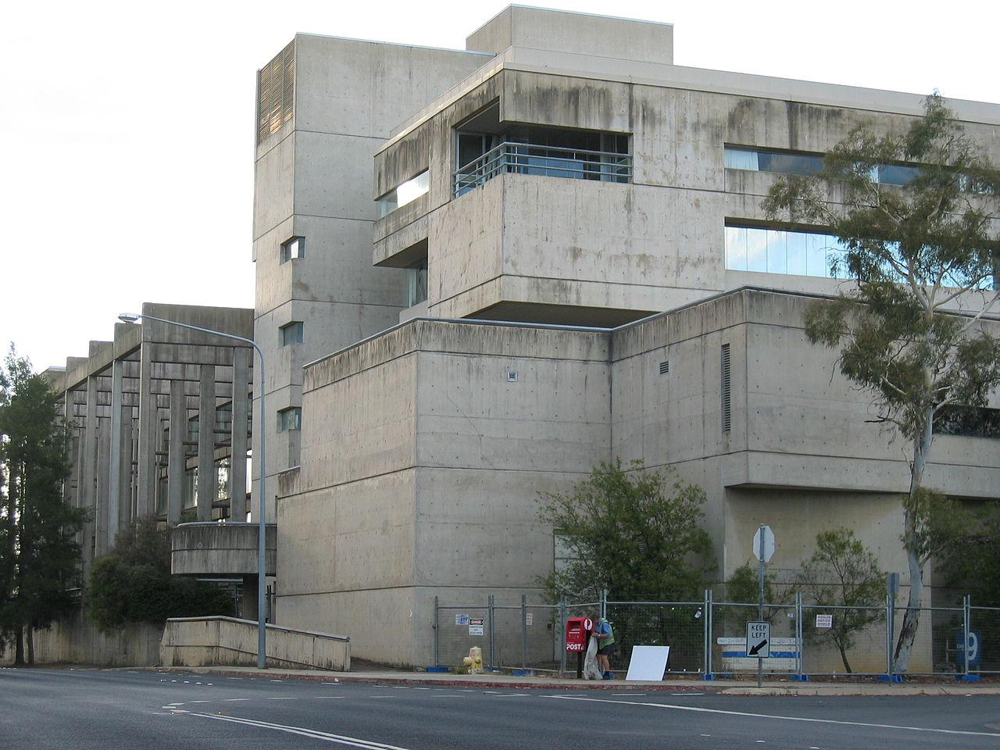

At Risk
Churchill House
Designed by prominent Australian architect Robin Boyd, Churchill House is considered one of the most important modernist buildings in Canberra. It currently faces threats of demolition and inappropriate alterations.
Find out more about the campaign to save it →